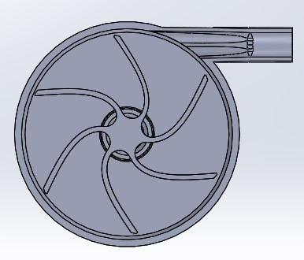

Drill-Powered Pump
The window wells at my mother’s house flood frequently, leading the family to the unpleasant solution of opening the basement window, siphoning the water into buckets and periodically carrying them to the sink to be dumped.
My brother and I were passing ideas back and forth, and eventually we came up with a plausible, ridiculous, fantastic idea: a completely 3D printed centrifugal drill-powered pump. The shaft of the impeller is a hex and fits into the drill chuck like a bit would; the water flows in through holes at the bottom and gets pumped into flexible tubing attached to the spigot and out into the yard. The first iteration, even with major flaws, had a head of over ten feet.
This project, aside from the ideation, was entirely done by myself. Designed in SolidWorks 2019.